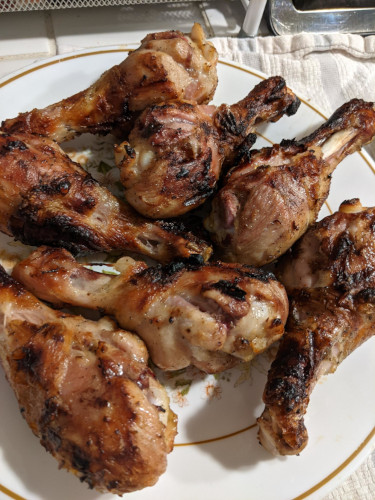

Roasted Pepper Chicken Brine

Description
A delicious 24-hour brine for about 4-5 lbs of any chicken you
like. Drumsticks, breasts, whole bird, whatever's clever! The brine
ensures juicy meat with crispy skin, and the roasted peppers add an
absolutely delicious smokey flavor throughout the meat.
The ingredients are not set in stone so feel free to experiment!
Add some more peppers, maybe some fresh herbs or citrus juice, you
really can't go wrong.
Ingredients
- 4 to 5 lbs. chicken (whole or any pieces you'd like)
- 1 gallon water
- A container large enough to fit chicken and brine liquid
- 1/2 cup kosher salt
- 4 to 5 large peppers (bell, poblano, etc.), roasted & chopped
- 4 tbsp. mustard powder
- 2 tbsp. smoked paprika
- 1 shallot, chopped
- 2 cloves garlic, chopped
- 2 tbsp. apple cider vinegar
Steps
- Mix salt, mustard powder & paprika together
- Add salt and spice mix to water, stir until dissolved
- Add vinegar to brine mixture
- Add peppers, shallot and garlic to brine mixture
- Poke some holes in chicken with a fork to help brine permeate
- Add chicken to brine mixture
- Ensure chicken is totally submerged - add some water if needed
- Cover and refridgerate for about 24 hours
- When ready to cook, remove chicken & discard brine
- Pat the chicken dry with some paper towels before cooking
- Cook your chicken however you like (grill, baked, whatever)
- ENJOY!